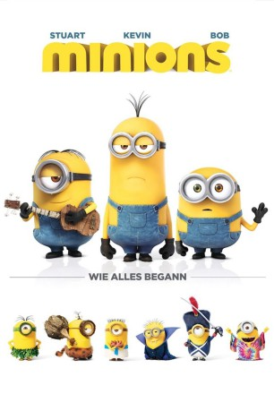

gesehen am 26.10.2015
gesehen am 26.10.2015 
 IMDB-Wertung: 6.4 / 10
IMDB-Wertung: 6.4 / 10  Metascore:
Metascore: 
Seit dem Anfang des Anfang gab es die Minions schon: kleine, gelbe Helferlein, deren einziger Existenzgrund ist, einem Bösewicht zu Diensten zu stehen. Als all ihre Meister jedoch zerstört wurden, zogen sie sich in die Antarktis zurück und verharrten dort viele, viele Jahre in Depression - bis schließlich in den Sechziger Jahren der mutigste Minion und zwei Gefährten den Entschluss fassen, einen neuen Meister finden zu gehen. Und so machen sie sich auf zu einer Bösewicht-Convention. Dort laufen sie der verrückten Super-Bösewichtin Scarlett Overkill und ihrem Ehemann, dem Wissenschaftler Herb Overkill in die Arme. Sie will die erste weibliche Oberbösewichtin werden und die kleinen gelben Helferlein für ihre finsteren Pläne missbrauchen.
Jahr: 2015
Dauer: 91 Minuten
FSK: 0
Land: USA Studio: Universal PicturesTonspuren: DD5.1 - ,
Untertitel: Deutsch,
Auflösung: 1080p (1920x1080) Größe: 4986 MB
Genre: Animation/Trick, Komödie, Familie
Regisseur: Kyle Balda, Pierre Coffin
Drehbuch: Brian Lynch
Soundtrack: Heitor Pereira
Darsteller:
 Sandra Bullock als Scarlet Overkill
Sandra Bullock als Scarlet Overkill Jon Hamm als Herb Overkill
Jon Hamm als Herb Overkill Michael Keaton als Walter Nelson
Michael Keaton als Walter Nelson Allison Janney als Madge Nelson
Allison Janney als Madge Nelson Steve Coogan als Professor Flux / Tower Guard
Steve Coogan als Professor Flux / Tower Guard Jennifer Saunders als The Queen
Jennifer Saunders als The Queen Geoffrey Rush als Narrator
Geoffrey Rush als Narrator Steve Carell als Young Gru
Steve Carell als Young Gru Pierre Coffin als The Minions
Pierre Coffin als The Minions Katy Mixon als Tina
Katy Mixon als Tina Michael Beattie als VNC Announcer / Walter Jr.
Michael Beattie als VNC Announcer / Walter Jr. Hiroyuki Sanada als Sumo Villain
Hiroyuki Sanada als Sumo Villain Paul Thornley als News Reporter
Paul Thornley als News Reporter Ava Acres als Additional Voices
Ava Acres als Additional Voices Carlos Alazraqui als Additional Voices
Carlos Alazraqui als Additional Voices Lori Alan als Additional Voices
Lori Alan als Additional Voices Bob Bergen als Additional Voices
Bob Bergen als Additional Voices Jim Cummings als Additional Voices
Jim Cummings als Additional Voices John Cygan als Additional Voices
John Cygan als Additional Voices Brian T. Delaney als Additional Voices
Brian T. Delaney als Additional Voices Bill Farmer als Additional Voices
Bill Farmer als Additional Voices Jess Harnell als Additional Voices
Jess Harnell als Additional Voices John Kassir als Additional Voices
John Kassir als Additional Voices Sherry Lynn als Additional Voices
Sherry Lynn als Additional Voices Gary Martin als Additional Voices
Gary Martin als Additional Voices Laraine Newman als Additional Voices
Laraine Newman als Additional Voices Andy Nyman als Additional Voices
Andy Nyman als Additional Voices Alexander Polinsky als Additional Voices
Alexander Polinsky als Additional Voices Cole Sand als Additional Voices
Cole Sand als Additional Voices Mindy Sterling als Additional Voices
Mindy Sterling als Additional Voices Tara Strong als Additional Voices
Tara Strong als Additional Voices Jim Ward als Additional Voices
Jim Ward als Additional Voices Lewis Macleod als Additional Voices
Lewis Macleod als Additional Voices Mona Marshall als Additional Voices
Mona Marshall als Additional Voices Jan Rabson als Additional Voices
Jan Rabson als Additional VoicesDatei: X:\Kinder Collections\Ich, einfach unverbesserlich\Minions (2015, FSK0, 1920x1080) 3D.mkv seit 26.10.2015
Festplatte: Kinder-Filme+Trick
 Es gibt insgesamt 13 Filme in der Gruppe 'Kinder Collections\Ich, einfach unverbesserlich'
Es gibt insgesamt 13 Filme in der Gruppe 'Kinder Collections\Ich, einfach unverbesserlich'